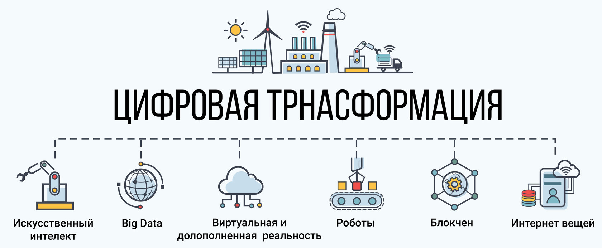

Цифровая трансформация: сущность и основные понятия
Суть и содержание понятия «цифровая трансформация»
Цифровая трансформация
Интеллектуальные помощники и специальные программы берут часть принятия решений
Технология блокчейн и смартконтракты
Обработка больших данных, машинное обучение
Полностью «цифровая» организация
Интернет вещей
Определение цифровой трансформации
Цифровая трансформация предполагает внедрение цифровых технологий в различные сферы жизни, прежде всего в бизнес,
деятельность организаций, управление ей.
Цифровая трансформация - это перестройка бизнеса на основе использования цифровых моделей, методов
управления, продукции (работ, услуг).
Цифровая трансформация - это качественные изменения в бизнес-процессах или способах осуществления
экономической деятельности (бизнес-моделях) в результате внедрения цифровых технологий, приводящие к значительным
социально-экономическим эффектам.
Сегодня цифровая трансформация является центральным элементом и важнейшим условием для достижения операционной
эффективности и внедрения инноваций во всей организации. Это позволяет ускорить рост компании, увеличить
эффективность ее деятельности и более оперативно решать возникающие проблемы.
Применяется для:
Бизнеса
Обучения
Отраслей (сфер деятельности)
Управления организацией
Особенности цифровой траснформации:
Экспоненциальный темп развития
Трансформация затрагивает все сферы жизни, производства
Изменение рынка труда
Создание новых бизнес-моделей
Появление «полностью цифрового» бизнеса
Промышленные революции
Промышленная революция - кардинальное изменения производства и общества в результате развития технологий. Выражается
в:
Высвобождение рабочей силы
Замена человеческого труда машинами
Увеличение производительности труда
Изменение общества и его структуры
Повышение уровня жизни
Изменение структуры потребления
4 промышленные революции
I промышленная революция
II промышленная революция
III промышленная революция
IV промышленная революция
1778
Изобретение Джеймсом Уаттом парового двигателя.
Машины впервые заменили человека
Строительство заводов и фабрик
Конец 19-начало 20 века.
Электрификация, автомобиль, лампа накаливания. Первый конвейер Форда
Строительство железных дорог, возникновение новых отраслей производства
Около 1960.
Создание ЭВМ, затем персональных компьютеров. Автоматизация производства
Интернет, цифровизация
Сквозные технологии ЦТ
Появление цифровой экономики
Активный рост продаж услуг и «цифровой» продукции
Цифровая трансформация

Предпосылки для возникновения цифровой трансформации
Развитие доступного Интернета
Повышение мощности компьютеров
Наличие у многих людей гаджетов, которые позволяют им участвовать в цифровой экономике
Возникновение цифрового сектора в экономике, «цифровой» экономи-ки
Возникновение и распространение «сквозных» технологий, обеспечи-вающих возникновение ЦТ
Уровень автоматизации и цифровизации производства, позволяющий использовать цифровую трансформацию
Сквозные технологии цифровой трансформации
нейротехнологии и искусственный интеллект
"большие данные" (big data)
системы распределенного реестра (блокчейн)
квантовые технологии
новые производственные технологии
промышленный интернет
компоненты робототехники и сенсорика
технологии беспроводной связи (в частности, 5G)
технологии виртуальной и дополненной реальности (VR и AR)
Цифровизация, цифровая экономика и цифровая трансформация
Цифровой – сущность (технология, процесс и пр.), в которой выполнение процесса (деятельности и т.п.) основано
исключительно на использовании информационно-телекоммуникационных технологий (ИКТ) и оборудования, и при этом без
использования человека.
Цифровизация – это внедрение цифровых технологий в разные сферы жизни для повышения её качества и развития
экономики.
Цифровизация - деятельность, позволяющая во много раз увеличить производительность разных процессов за счет
использования информации, оцифрованной, объединенной в единую систему
Автоматизация - Машинное производство, осуществляемое по программе или под контролем компьютера и не требующее
обычно участия человека.
Этапы:
Автоматизация
Информатизация
Цифровизация
Цифровая трансформация
Критерий
Автоматизация
Информатизация
Цифровизация
Цифровая трансформация
Объект
Подразделение, организация
Организация, сфера деятельности
Организация, сфера деятельности
Организация, сфера деятельности
Широта охвата
Операция
Бизнес-процесс
Группа бизнес-процессов
Бизнес-процесс
Группа бизнес-процессов
Бизнес-процесс
Группа бизнес-процессов
Группа сквозных бизнес-процессов
Цель внедрения
Снижение трудоемкости выполнения бизнес-процессов
Снижение трудоёмкости выполнения бизнес-процессов
Комплексное эффективное управление организацией
Снижение трудоёмкости выполнения бизнес-процессов
Повышение скорости и качества при-нятия бизнес-решений
Кардинальная перестройка организации – бизнес-процессов, сотрудников, культуры, экосистемы и пр.
Разработка новых «цифровых» продуктов/моделей
Получение принципиально новых бизнес-возможностей
 Сегодня цифровая трансформация является центральным элементом и важнейшим условием для достижения операционной
эффективности и внедрения инноваций во всей организации. Это позволяет ускорить рост компании, увеличить
эффективность ее деятельности и более оперативно решать возникающие проблемы.
Сегодня цифровая трансформация является центральным элементом и важнейшим условием для достижения операционной
эффективности и внедрения инноваций во всей организации. Это позволяет ускорить рост компании, увеличить
эффективность ее деятельности и более оперативно решать возникающие проблемы.